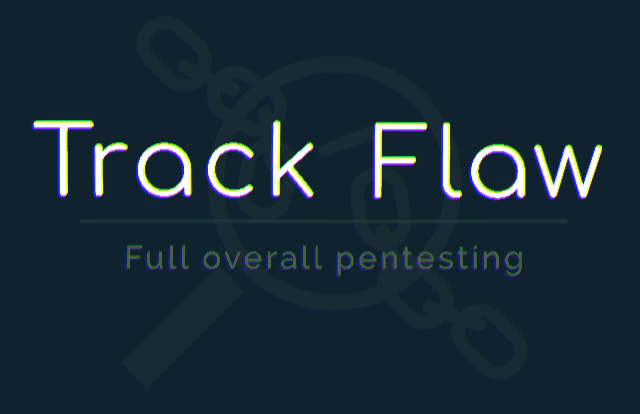

About
Trackflaw is a small company specializing in comprehensive penetration testing. Its area of expertise is external, internal and mobile penetration testing. By focusing on this type of audit, Trackflaw's vocation is to provide highly technical services in order to guarantee the exhaustiveness and quality of the security tests carried out.
Through strict methodologies and work rigors, Trackflaw is committed to providing clear and professional deliverables for both managerial and highly technical audiences to facilitate their understanding.
Always with a view to optimal quality, no mission is subcontracted in order to guarantee the know-how and the demanding brand image of the company..

Our values
In the world of IT security and more particularly penetration testing, there are many companies. It is legitimate to ask why trust Trackflaw ?
No automatic scanner report
Automatic vulnerability scanners are extremely powerful and useful tools in our business. However, unscrupulous companies offer this type of tool as a real penetration test service, thus degrading our image as auditors. These tools cannot guarantee an exhaustive test and do not allow us to correctly judge its security level.
At Trackflaw, these tools are only used in very specific cases in order to bring a different perspective to the auditor without bringing significant value.
A meticulous methodology
To ensure completeness of the tests, Trackflaw carefully follows the OWASP methodology divided into 12 sections. Each of these sections has test lists to check all the functionalities of an application and to judge the general level of security as well as possible. A similar methodology is applied for internal and mobile intrusion tests.
A comprehensive report
An auditor's job is above all to make the audited teams understand their various weaknesses in order to provide them with the best possible support in their correction projects.
The audit reports are therefore the most important elements. Trackflaw therefore pays a lot of attention to them so that they can be understood by management teams as highly technical. Different sections are made to be understood by the different levels of a company.
Team
Thibaud ROBIN
Propelled by passion and trained by one of the best security company in the world, Trackflaw is proudly managed by Thibaud Robin.
Passionate about offensive security, Thibaud spend his days researching vulnerabilities in systems and applications. Through external, internal and mobile penetration tests, he aims to make today's world more secure.
Sharing, questioning, tolerance and modesty are the different values that he attribute to his profession.
Some highlights
Services
Pentest
Through a scrupulous methodology, Trackflaw is able to deliver intrusion testing services in order to detect security breaches.
Trackflaw has expertise in external and application penetration testing, internal and active directory, mobile android and ios.
Audit expertises
- Web and applicative audit
- Internal and Active Directory audit
- Android and iOS mobile application
Teaching
Trackflaw is able to intervene on various training topics related to IT security and work with several institutions of higher education.
Example of trainings
- Preparation for OSCP certification
- Preparation for CEH certification
- Secure development training
- Introduction to web security
Contact
Linkedin
Twitter
GitHub
contact@trackflaw.com